2.1. Working with gapped records (EDF+D)
Describing EDF+D segments
Having previously run HEADERS, we can confirm that some files are EDF+D:
destrat out.db +HEADERS -v EDF_TYPE
ID EDF_TYPE
F01 EDF+D
F02 EDF
F03 EDF
F04 EDF
F05 EDF
F06 EDF
F07 EDF
F08 EDF
F09 EDF
F10 EDF+D
M01 EDF
M02 EDF
M03 EDF
M04 EDF
M05 EDF
M06 EDF
M07 EDF
M08 EDF
M09 EDF
M10 EDF+D
To explore the structure of F01, F10 and M10, we can use
the SEGMENTS command,
which reports on EDF+D segment/gap structure and
timing (note: the id option tells Luna only to run for these three individuals):
luna harm1.lst -o out.db id=F01,F10,M10 -s SEGMENTS
As a reminder, you can get a listing of the available tables and variables contained in an Luna output database:
destrat out.db
--------------------------------------------------------------------------------
out.db: 1 command(s), 3 individual(s), 9 variable(s), 489 values
--------------------------------------------------------------------------------
command #1: c1 Tue Sep 3 10:21:47 2024 SEGMENTS sig=*
-------------------------------------------------------------------------
distinct strata group(s):
commands : factors : levels : variables
----------------:------------:---------------:---------------------------
[SEGMENTS] : . : 1 level(s) : NGAPS NSEGS
: : :
[SEGMENTS] : SEG : 30 level(s) : DUR_HR DUR_MIN DUR_SEC START
: : : START_HMS STOP STOP_HMS
: : :
[SEGMENTS] : GAP : 30 level(s) : DUR_HR DUR_MIN DUR_SEC START
: : : START_HMS STOP STOP_HMS
: : :
----------------:------------:---------------:---------------------------
The baseline level (i.e. . factors, obtained by just specifying
the appropriate +COMMAND) gives the number of segments and gaps per
individual:
destrat out.db +SEGMENTS
ID NGAPS NSEGS
F01 30 30
F10 2 3
M10 2 2
Looking at the individual segments (with -r SEG) one individual at a time (with the
-i option) and extracting only a subset of available variables (with
the -v option):
destrat out.db +SEGMENTS -r SEG -v DUR_MIN START_HMS STOP_HMS -i F01
ID SEG DUR_MIN START_HMS STOP_HMS
F01 1 9.5 22:41:30.000 22:51:00.000
F01 2 0.5 23:40:30.000 23:41:00.000
F01 3 4.5 23:41:30.000 23:46:00.000
F01 4 5 23:46:30.000 23:51:30.000
F01 5 3 23:52:00.000 23:55:00.000
F01 6 1 23:56:00.000 23:57:00.000
F01 7 1 23:58:00.000 23:59:00.000
F01 8 2.5 23:59:30.000 00:02:00.000
F01 9 15.5 00:02:30.000 00:18:00.000
F01 10 2 00:29:00.000 00:31:00.000
F01 11 0.5 00:33:00.000 00:33:30.000
F01 12 0.5 00:34:00.000 00:34:30.000
F01 13 1.5 00:39:30.000 00:41:00.000
F01 14 0.5 00:41:30.000 00:42:00.000
F01 15 1 00:42:30.000 00:43:30.000
F01 16 3.5 00:44:00.000 00:47:30.000
F01 17 0.5 00:48:30.000 00:49:00.000
F01 18 2.5 01:13:30.000 01:16:00.000
F01 19 6.5 01:22:30.000 01:29:00.000
F01 20 14.5 01:29:30.000 01:44:00.000
F01 21 4.5 01:50:00.000 01:54:30.000
F01 22 0.5 02:03:30.000 02:04:00.000
F01 23 0.5 02:05:00.000 02:05:30.000
F01 24 0.5 02:07:00.000 02:07:30.000
F01 25 1 02:08:00.000 02:09:00.000
F01 26 36.5 02:09:30.000 02:46:00.000
F01 27 46 03:14:30.000 04:00:30.000
F01 28 9 04:40:30.000 04:49:30.000
F01 29 5.5 04:50:00.000 04:55:30.000
F01 30 0.5 04:57:30.000 04:58:00.000
For F01, we see 30 distinct (contiguous) segments in the EDF, from
across the night and all in multiples of 30 seconds (i.e. epoch size).
In contrast, the other two recordings have fewer segments (and correspondingly fewer gaps): for F10:
destrat out.db +SEGMENTS -r SEG -v DUR_MIN START_HMS STOP_HMS -i F10
ID SEG DUR_MIN START_HMS STOP_HMS
F10 1 5.0166 22:00:00.000 22:05:01.000
F10 2 161.666 22:05:11.200 00:46:51.200
F10 3 294.083 00:52:18.600 05:46:23.600
M10:
destrat out.db +SEGMENTS -r SEG -v DUR_MIN START_HMS STOP_HMS -i M10
ID SEG DUR_MIN START_HMS STOP_HMS
M10 1 8.8666 22:00:22.300 22:09:14.300
M10 2 436.733 22:16:18.557 05:33:02.557
Based on the first segment starting at 22:00:22.3
(noting that due to deidentification, start times for all EDFs was set
to 22.00.00) and the number of gaps versus number of segments in
M10, we can infer that there was a gap at the beginning of the
recording. We can look at gaps explicitly with -r GAP:
destrat out.db +SEGMENTS -r GAP -v DUR_MIN START_HMS STOP_HMS -i M10
ID GAP DUR_MIN START_HMS STOP_HMS
M10 1 0.37166 22:00:00.000 22:00:22.300
M10 2 7.07095 22:09:14.300 22:16:18.557
(Note that whereas the EDF header specification requires 22.00.00,
as this is respected by Luna when creating new files, Luna output
often tends to use 22:00:00, formats, possibly with fractional
seconds. Inputs can be written either way.)
Converting EDF+D to EDF
The EDF+D format, which is supported by Luna, is explicitly designed to handle discontinuous recordings. In the context of a sleep study, this means those with gaps in the recording. However, it can be inconvenient to work with gapped recordings for a number of reasons:
-
other software may not accept the EDF+ format
-
staging annotations may not temporally align across the night, which can cause issues with certain analyses, in the mapping of epochs to stages
-
it may obscure the estimation of whole-night hypnogram-based statistics (i.e. how are the gaps handled?)
Therefore, although not a requirement, it may be convenient to translate a gapped recording to a standard, continuous EDF. This is especially true when (as is often the case), the gap is relatively small (e.g. at the start of the recording between calibration and sleep intervals, or reflecting a bathroom visit in the middle of the night, etc).
Visualizing EDF+D segments
Commands such as EPOCH, SEGMENTS, ANNOTS and SPANNING can be
used to tabulate the structure of an EDF+D and the alignment of stage
annotations across EDF+D segments. It is often easier to visulize
records, however. Here we'll use Luna's Python interface
lunapi.
Following the instructions above, either locally or in Docker, you should be able to pull up
an instance of a JupyterLab notebook and import the lunapi Python module (a Python module with bindings
to the C/C++ Luna library), in which you can read in the harm1.lst sample list (proj.sample_list()) and then
attach the signals and annotations for F01 with the proj.inst() function:
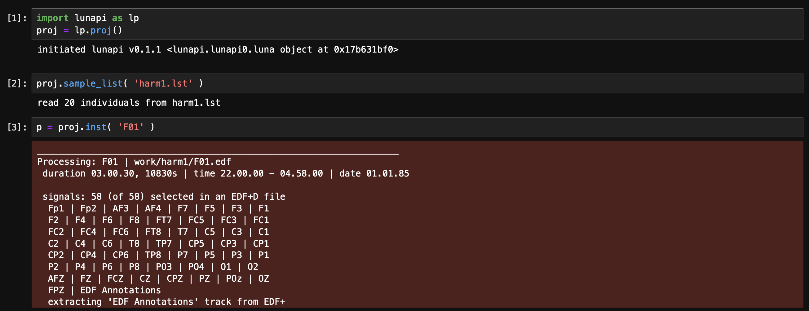
You can use the viewer lp.scope() (which takes as an argument the
individual instance returned by proj.inst()) to view the file.
This shows a 30-second epoch with selected signals; the blue band at
the top indicates that this is an N2 epoch. The top shows a hypnogram
based on all present stage annotations too):
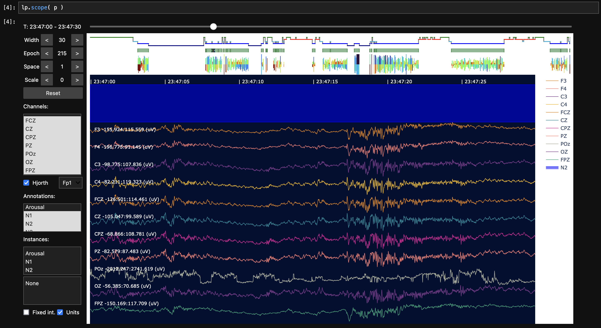
Zooming out (by increasing the Width button, here to 3840 seconds, i.e. just over an hour, 3840 / 60 = 64 minutes) we can see gaps in the display (i.e. black/gray boxes with no signal data):
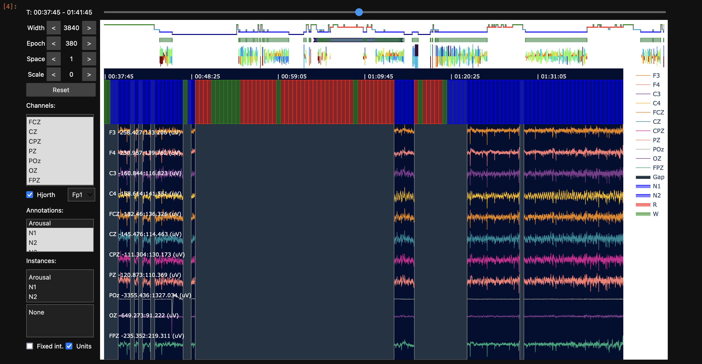
In the above, we can also see red (REM) and green (Wake) epochs seem
to span the gapped region. N1 sleep is represented by a shade of blue,
but looks quite similar in this view, i.e. see around 01:20:25.
Noting the very subtle difference between N1 and N2 color schemes, it
appears that the segments for F01 appear only for N2 epochs -
consistent with what HYPNO reported for this individual: i.e. it only
contains N2 sleep.
To confirm this, we can select only the N2 annotation (middle left combo box) so it doesn't plot N1, N3, R and W annotations, and then zoom out so the display covers the whole night:
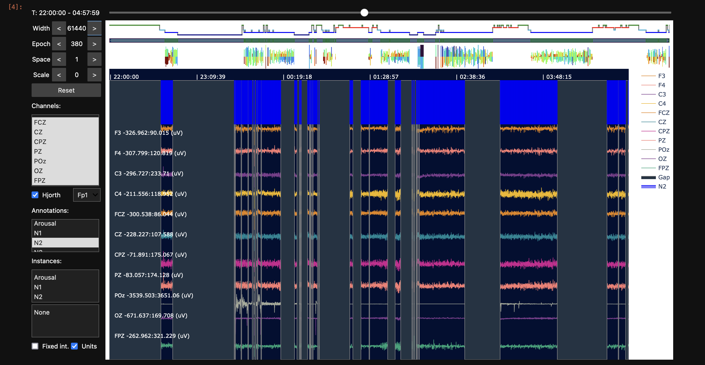
Here we see a perfect alignment between signals and N2 epochs.
What about F10? If we edit and re-run this cell to attach F10 (and then re-run the lp.scope(p) cell too, to update the viewer to show this new recording):
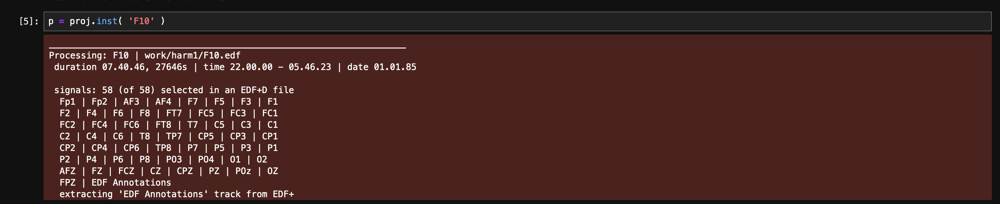
Selecting a few midline channels and clicking on the annotations, if
we scroll around and resize the Width window, we'll come across the
first gap (of two) for this individual (note the green bar at the top
represents segments of the EDF+D). We can see this appears quite
different from the F01 example - here the gap does not align with
the end of an annotation epoch, i.e. suggesting that the gap happened
naturally while recording, rather than as some post-processing step
after staging, as above. However, the next stage annotation (each
blue rectangle is 30 seconds in this example) seems to align with the
start of the new segment. i.e. this may reflect a recording where
within each segment staging annotations are aligned (to the start of
that segment).
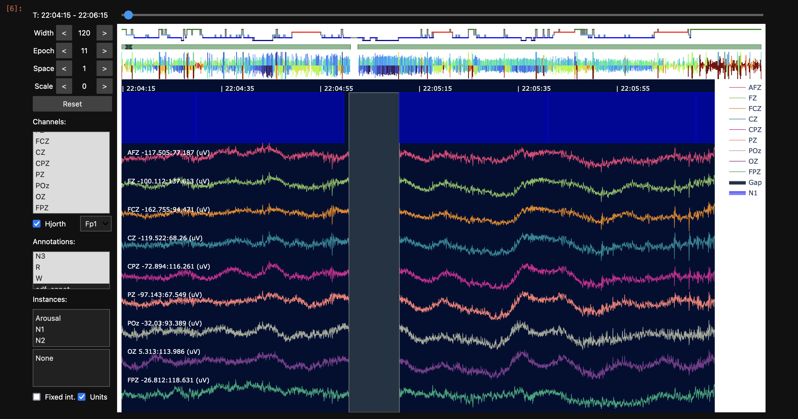
Scanning forward to see the next gap (about two-fifths of the way through the night, and visible in the green bar at the top), we see a similar pattern:
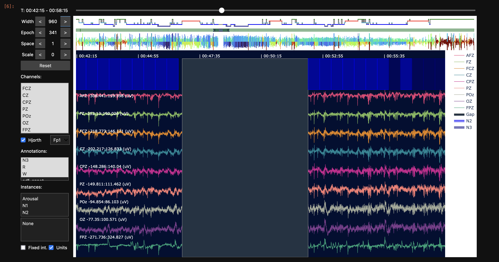
In contrast, M10 presents a different mode of EDF+ segment/gap and stage/epoch alignment. Repeating the
above steps but this time to attach M10 and re-running the lp.scope(p) option:
Speeding up scope initialization
In order to render whole-night
(high-density) EEG recordings well, scope does a few things
behind the scenes, e.g. downsampling, anti-aliasing and storing
the data more efficiently before rendering the window. This can
take e.g. 10 or so seconds for a long recording with many (high
sample rate) channels. If you know you only want a few channels
to visualize, you can speed up the initial step by specifying them
with chs explicitly:
lp.scope( p , chs = [ 'FZ', 'CZ' , 'PZ' , 'OZ' ] )
For M10, the gap is right at the start of the recording, and we see
that stage annotations (i.e. green boxes representing wake epochs at
the top) align to the "official" EDF start time (10pm) and march
forward in a uniform way, ignoring the segment boundaries of the
EDF+D:
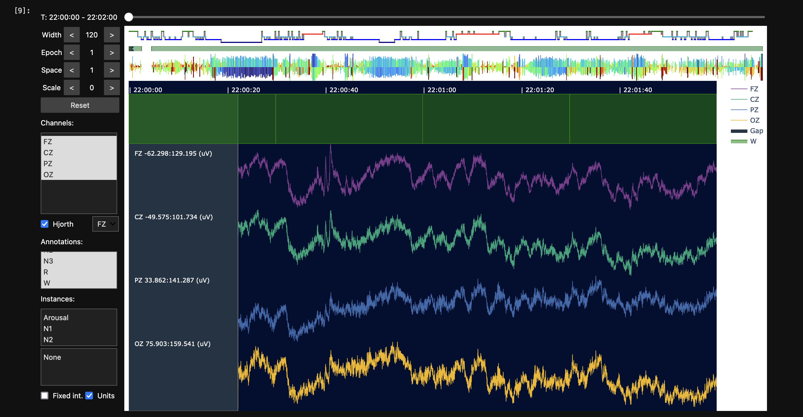
We see a similar thing for the second gap: the staging seems aligned with clock-time from the EDF start, rather than within each segment of the EDF+D:
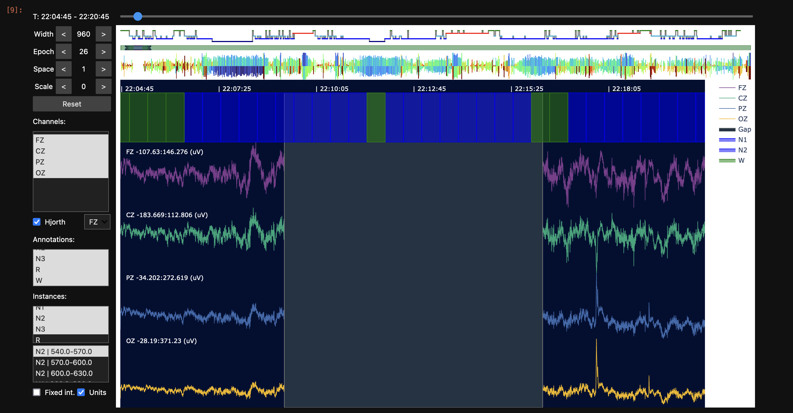
In the above example, we've also clicked on the Instances annotation tab (lower left boxes) which shows the annotations with start-stop times in seconds; you can click on those instances and the viewer will jump to that position in the recording.
In summary, visualizing the EDFs we see three quite distinct modes of "gap" with respect to the stage information:
-
F01only contains N2 epochs, with many gaps, but all segments have full, complete staged epochs -
F10has fewer gaps and staging annotations aligned within each segment; there are some small "unannotated" portions of the data where we have signals but no spanning annotations (i.e. for a few seconds before the EDF+D segment gap starts) -
M10also has fewer gaps, but staging annotations are similar to the standard EDF files (i.e. evenly spaced in 30-second intervals from the EDF start of 10pm); segment/gap boundaries do not fall cleanly with respect to staging annotations, however
Hypnogram statistics on EDF+D
To illustrate some issues that can occur working with gapped recordings, we'll try to estimate hypnogram statistics
for these records, e.g. stage durations. (We'll explore the HYPNO
command in more detail later in this walkthrough.)
luna harm1.lst -o out.db id=F01,F10,M10 -s HYPNO
The first two records are processed without warning, but M10 gives
warning about conflicting intervals and the message:
*** found 211 epoch(s) of 890 with conflicting spanning annotations
*** check that epochs and annotations align as intended
*** see EPOCH 'align' or 'offset' options
This is also reflected in HYPNO's CONF (conflict) variable, which means
that an epoch has more than one conflicting stage annotation that
overlap it:
destrat out.db +HYPNO -v CONF
ID CONF
F01 0
F10 0
M10 211
Typically, we assume staged sleep recordings have aligned epochs and stage annotations: e.g. both starting at the EDF start (i.e. 0 elapsed seconds) and incrementing cleanly in 30 second intervals across the night. Luna does not require a strict one-to-one correspondence between epochs and stages (e.g. a stage annotation may be 60, 90, 120, etc seconds and span multiple epochs). But for hypnogram-based analyses, it does critically assume that any one epoch does not have more than one spanning stage annotation. If an epoch is spanned by multiple, distinct stage annotations, this generates the conflict warnings seen above.
For M10, this arises because the first segment in the EDF+D is
22:00:22.3. By default, 30-second epochs for this recording would
start at 22:00:22.3, then 22:00:52.3, then `22:01:22.3, etc. In contrast, the
annotations for M10 are not aligned with these epochs:
head work/harm1/M10.annot
class instance channel start stop meta
W . . 0.000 30.000 .
W . . 30.000 60.000 .
W . . 60.000 90.000 .
W . . 90.000 120.000 .
W . . 120.000 150.000 .
W . . 150.000 180.000 .
...
which is defined relative to the EDF start time (22:00:00), not
the start of the first segment (22:00:22.3). The first and middle set of columns
reflect the stage annotations and default epochs for this gapped EDF+D (M10), showing
the lack of alignment:
M10 segments
EDF start : 22:00:00
First segment : 22:00:22.3 -- 22:09:14.3
Second segment : 22:16:18.557 -- 05:33:02.557
M10 staging and epoch times
.annot file Default epochs Stage-aligned epochs
=============== ============================ =======================
SS Start stop E HMS START STOP E HMS START STOP
W 0 30 . . . . . . . .
W 30 60 1 22:00:22.3 22.3 52.3 1 22:00:30 30 60
W 60 90 2 22:00:52.3 52.3 82.3 2 22:01:00 60 90
W 90 120 3 22:01:22.3 82.3 112.3 3 22:01:30 90 120
W 120 150 4 22:01:52.3 112.3 142.3 4 22:02:00 120 150
W 150 180 5 22:02:22.3 142.3 172.3 5 22:02:30 150 180
W 180 210 6 22:02:52.3 172.3 202.3 6 22:03:00 180 210
W 210 240 7 22:03:22.3 202.3 232.3 7 22:03:30 210 240
W 240 270 8 22:03:52.3 232.3 262.3 8 22:04:00 240 270
W 270 300 9 22:04:22.3 262.3 292.3 9 22:04:30 270 300
W 300 330 10 22:04:52.3 292.3 322.3 10 22:05:00 300 330
W 330 360 11 22:05:22.3 322.3 352.3 11 22:05:30 330 360
W 360 390 12 22:05:52.3 352.3 382.3 12 22:06:00 360 390
N1 390 420 13 22:06:22.3 382.3 412.3 13 22:06:30 390 420
N1 420 450 14 22:06:52.3 412.3 442.3 14 22:07:00 420 450
N1 450 480 15 22:07:22.3 442.3 472.3 15 22:07:30 450 480
N1 480 510 16 22:07:52.3 472.3 502.3 16 22:08:00 480 510
N1 510 540 17 22:08:22.3 502.3 532.3 17 22:08:30 510 540
N2 540 570 . . . . . . . .
N2 570 600 . . . . . . . .
N2 600 630 . . . . . . . .
N1 630 660 . . . . . . . .
N1 660 690 . . . . . . . .
W 690 720 . . . . . . . .
N1 720 750 . . . . . . . .
N1 750 780 . . . . . . . .
N2 780 810 . . . . . . . .
N1 810 840 . . . . . . . .
N2 840 870 . . . . . . . .
N2 870 900 . . . . . . . .
N2 900 930 . . . . . . . .
N2 930 960 . . . . . . . .
W 960 990 . . . . . . . .
W 990 1020 18 22:16:18 978.557 1008.557 18 22:16:30 990 1020
N1 1020 1050 19 22:16:48 1008.557 1038.557 19 22:17:00 1020 1050
N1 1050 1080 20 22:17:18 1038.557 1068.557 20 22:17:30 1050 1080
N2 1080 1110 21 22:17:48 1068.557 1098.557 21 22:18:00 1080 1110
N2 1110 1140 22 22:18:18 1098.557 1128.557 22 22:18:30 1110 1140
...
Generating epoch intervals
The epoch times above can be generated by adding verbose to the EPOCH command (note that EPOCH
is often run implicitly if a command (such as HYPNO requires epoched data):
luna harm1.lst -o out.db id=M10 -s EPOCH verbose
destrat out.db +EPOCH -r E -v HMS START STOP
As suggested in the message from HYPNO above, one solution is to add EPOCH
align before running HYPNO; here we will see the implied epochs
(rightmost set of columns in the table above, Stage-aligned epochs),
generated by:
luna harm1.lst -o out.db id=M10 -s EPOCH align verbose
destrat out.db +EPOCH -r E -v HMS START STOP | head
The impact of this is to effectively set the first analysis epoch to
22:00:30, the start of the first whole stage annotation in the
first segment, rather than 22:00:22.3, the start of the first
segment. Note that alignment from EPOCH align happens within each
segment (i.e. in the second segment, the first epoch starts at
22:16:30). Also keep in mind that within each segment, Luna assumes
uniform staging that will align with epochs, i.e. the alignment
action is only performed once for each segment, based on the start of
the first staging annotation found.
Re-running HYPNO but now explicitly requesting that all epochs are aligned with stage annotations:
luna harm1.lst -o out.db id=F01,F10,M10 -s 'EPOCH align & HYPNO'
destrat out.db +HYPNO -v CONF
ID CONF
F01 0
F10 0
M10 0
We can now view hypnogram statistics for all records, e.g. stage durations:
destrat out.db +HYPNO -r SS/N1,N2,N3,R,W -v MINS
ID SS MINS
F01 N1 0
F01 N2 180.5
F01 N3 0
F01 R 0
F01 W 0
F10 N1 40.5
F10 N2 213
F10 N3 42
F10 R 73.5
F10 W 91.5
M10 N1 83.5
M10 N2 199.5
M10 N3 40
M10 R 57
M10 W 57.5
For individual F01, we see that only N2 epochs are present, as
appeared to be the case from visual review. If encountered in real
data, this would presumably indicate that the recording was subsetted
(masked in Luna terminology) prior to EDF export: here, the only
option is to retrieve the original unmanipulated data (i.e. from the v1 folder).
EDF-MINUS
For F10 and M10, both of which have only small gaps, we may still want
to use Luna's EDF-MINUS command to generate standard, continuous
EDFs. Rather than simply ignoring the time-track (i.e. reading an EDF+D as if it is a standard EDF),
EDF-MINUS does a few additional things:
-
extracts selected segments and aligns them to existing annotations (e.g. stages)
-
aligns segments to EDF record boundaries
-
can either remove (splice) or fill (zero-pad) gaps
-
if needed, adjusts annotations so they align consistently with the new standard EDF
Of the two supported policies for handling gaps: splicing makes sense when annotations are aligned with respect to segment starts, but not to clocktime. In contrast, zero-padding may make sense when annotations are consistently aligned with respect to clocktime.
From our visual review of F10 and M10 above, we can see that
splicing (change annotations to match signals) may make more sense to
"fix" F10, whereas zero-padding (change signals to match
annotations) may be better suited for dealing with gaps in M10.
If it does not already exist, make a temporary folder tmp/ with:
mkdir tmp
Starting with F10, we'll write the new EDFs to tmp/;
luna harm1.lst id=F10 -o out.db -s EDF-MINUS policy=splice out=tmp/F10b
dataset contains 57 signals and 7 annotation classes (1052 instances)
specified 6 annotation classes (?,N1,N2,N3,R,W) for alignment (921 instances found)
aligning segment 0.00->301.00 start to 0 secs based on annotation W = 0.00->30.00
& aligning segment end to 300 based 10 whole intervals of 30s from aligned start at 0s
aligned segment 1 : 0.00-301.00 --> 0.00-300.00
aligning segment 311.20->10011.20 start to 311 secs based on annotation N1 = 311.20->341.20
& aligning segment end to 10001 based 323 whole intervals of 30s from aligned start at 311s
aligned segment 2 : 311.20-10011.20 --> 311.20-10001.20
aligning segment 10338.60->27983.60 start to 10338 secs based on annotation N2 = 10338.60->10368.60
& aligning segment end to 27978 based 588 whole intervals of 30s from aligned start at 10338s
aligned segment 3 : 10338.60-27983.60 --> 10338.60-27978.60
For example, note how the first aligned segment 1 is one second
shorter (up to 300 rather than 301 seconds) because the default policy
is to align segments to (whole) annotation boundaries.
If you do
not want such changes to be made, then simply don't use EDF-MINUS - the
overall logic is that making a handful of small edits to a recording
and subsequently treating it as continuous will -- in most practical
cases -- constitute a reasonable strategy. This command also outputs new annotations to indicate
where the gaps/padded sections are, so you can still elect to treat those specially if certain analyses demand that.
The next section of the output details which segments are retained, and how they are merged together. Because of the (default) option to align retained segments with stage boundaries, the final extracted recording is 16 seconds shorter:
found 3 segment(s)
[ original segments ] -> [ aligned, editted ] --> [ final segments ]
++ seg #1 : 0.00-301.00 (301s) [included] --> 0.00-300.00 --> 0.00-300.00 (1s shorter)
- gap #2 : 301.00-311.20 (10.2s) [spliced]
++ seg #2 : 311.20-10011.20 (9700s) [included] --> 311.20-10001.20 --> 300.00-9990.00 (10s shorter)
- gap #3 : 10011.20-10338.60 (327.4s) [spliced]
++ seg #3 : 10338.60-27983.60 (17645s) [included] --> 10338.60-27978.60 --> 9990.00-27630.00 (5s shorter)
original total duration = 27646s
retained total duration = 27630s (16s shorter)
creating a new EDF tmp/F10b.edf with 57 channels
retaining original EDF start-time of 22.00.00
retaining original EDF start-date of 1.1.1985
created an empty EDF of duration 27630 seconds
creating annotation file tmp/F10b.annot with 1052 annotations from 6 classes
data are not truly discontinuous
writing as a standard EDF
writing 57 channels
saved new EDF, tmp/F10b.edf
writing annotations (.annot format) to tmp/F10b.annot
The EDF-MINUS command also records key outputs in the standard database as well as the console log:
destrat out.db +EDF-MINUS -r SEG
ID SEG DUR_EDIT DUR_ORIG EDIT INCLUDED ORIG
F10 1 300 301 0.00->300.00 1 0.00->301.00
F10 2 9690 9700 311.20->10001.20 1 311.20->10011.20
F10 3 17640 17645 10338.60->27978.60 1 10338.60->27983.60
More detailed information, e.g. on the number of alignment annotations observed in each segment is also stored here:
destrat out.db +EDF-MINUS -r SEG ANNOT
ID ANNOT SEG N_ALL N_REQ
F10 ? 1 0 0
F10 N1 1 3 3
F10 N2 1 0 0
F10 N3 1 0 0
F10 R 1 0 0
F10 W 1 7 7
F10 ? 2 0 0
F10 N1 2 43 43
F10 N2 2 170 170
F10 N3 2 31 31
F10 R 2 42 42
F10 W 2 37 37
F10 ? 3 0 0
F10 N1 3 35 35
F10 N2 3 256 256
F10 N3 3 53 53
F10 R 3 105 105
F10 W 3 139 139
See the documentation for more information.
The SPANNING command
gives information on the extent to which
EDF records are spanned by one or more of a set of annotations
(typically, but not necessarily, stage annotations). Applying this to
the newly created F10b.edf and F10b.annot (note: specifying these
two files directly on the command line with annot-file, rather than using a sample
list, also note \ characters indicate continuation of the command over a newline for the shell):
luna tmp/F10b.edf annot-file=tmp/F10b.annot \
-o out.db \
-s SPANNING annot=N1,N2,N3,R,W
destrat out.db +SPANNING | behead
ID tmp/F10b
ANNOT_HMS 07:40:30.000
ANNOT_N 921
ANNOT_OVERLAP NO
ANNOT_SEC 27630
INVALID_N 0
INVALID_SEC 0
NSEGS 1
REC_HMS 07:40:30.000
REC_SEC 27630
SPANNED_HMS 07:40:30.000
SPANNED_PCT 100
SPANNED_SEC 27630
UNSPANNED_HMS 00:00:00.000
UNSPANNED_PCT 0
UNSPANNED_SEC 0
VALID_N 921
NSEGS) with 27630 seconds of annotated signal, which spans 100% of the avaialble signal.
In contrast, the original (EDF+D) has 3 segments, with the same duration of annotated signal, but a small percentage (16 seconds) or recording not spanned by an annotation, as we'd noted above.
luna harm1.lst id=F10 -o out.db -s SPANNING annot=N1,N2,N3,R,W
destrat out.db +SPANNING | behead
ID F10
ANNOT_HMS 07:40:30.000
ANNOT_N 921
ANNOT_OVERLAP NO
ANNOT_SEC 27630
INVALID_N 0
INVALID_SEC 0
NSEGS 3
REC_HMS 07:40:46.000
REC_SEC 27646
SPANNED_HMS 07:40:30.000
SPANNED_PCT 99.9421254431021
SPANNED_SEC 27630
UNSPANNED_HMS 00:00:16.000
UNSPANNED_PCT 0.0578745568979189
UNSPANNED_SEC 16
VALID_N 921
As above, both are valid files but the former can be simpler to work with for aforementioned reasons.
Turning to M10, here we'll adopt a zero-padding policy, i.e. to fill the gaps in the signals rather than splice
them out and change the annotations:
luna harm1.lst id=M10 -o out.db -s EDF-MINUS policy=zero-pad out=tmp/M10b
dataset contains 57 signals and 7 annotation classes (1117 instances)
specified 6 annotation classes (?,N1,N2,N3,R,W) for alignment (891 instances found)
aligning segment 22.30->554.30 start to 30 secs based on annotation W = 30.00->60.00
& aligning segment end to 540 based 17 whole intervals of 30s from aligned start at 30s
aligned segment 1 : 22.30-554.30 --> 30.00-540.00
aligning segment 978.56->27182.56 start to 990 secs based on annotation W = 990.00->1020.00
& aligning segment end to 27180 based 873 whole intervals of 30s from aligned start at 990s
aligned segment 2 : 978.56-27182.56 --> 990.00-27180.00
To keep things "tidy", the zero-padding (by default) operates in units of the default alignment-annotation width (i.e. 30 seconds): thus, rather than zero-padding by 22.3 seconds at the beginning, Luna inserts a 30 second zero-padded gap (i.e. noting it is 7.7 seconds longer). Likewise, some segments may be truncated if they would otherwise include partial stage annotations:
found 2 segment(s)
[ original segments ] --> [ aligned, editted final segments ]
- gap #1 : 0.00-22.30 (22.3s) [zero-padded] --> 0.00-30.00 (7.7s longer)
++ seg #1 : 22.30-554.30 (532s) [included] --> 30.00-540.00 (22s shorter)
- gap #2 : 554.30-978.56 (424.257s) [zero-padded] --> 540.00-990.00 (25.743s longer)
++ seg #2 : 978.56-27182.56 (26204s) [included] --> 990.00-27180.00 (14s shorter)
original total duration = 26736s
retained total duration = 27146.6s (410.557s longer)
creating a new EDF tmp/M10b.edf with 57 channels
updating EDF start-time from 22.00.00 to 22.00.30
retaining original EDF start-date of 1.1.1985
created an empty EDF of duration 27180 seconds
creating annotation file tmp/M10b.annot with 1117 annotations from 6 classes
data are not truly discontinuous
writing as a standard EDF
writing 57 channels
saved new EDF, tmp/M10b.edf
writing annotations (.annot format) to tmp/M10b.annot
Both splice and zero-padding policies may make small adjustments to align things with EDF record sizes too (of 1 second) and should typically "do the right thing". (If you encounter strange behavior, please let us know with an example.)
Reviewing the output for M10:
destrat out.db +EDF-MINUS -r SEG
ID SEG DUR_EDIT DUR_ORIG EDIT INCLUDED ORIG
M10 1 510 532 30.00->540.00 1 22.30->554.30
M10 2 26190 26204 990.00->27180.00 1 978.56->27182.56
destrat out.db +EDF-MINUS -r SEG ANNOT
ID ANNOT SEG N_ALL N_REQ
M10 ? 1 0 0
M10 N1 1 5 5
M10 N2 1 1 0
M10 N3 1 0 0
M10 R 1 0 0
M10 W 1 13 12
M10 ? 2 0 0
M10 N1 2 162 162
M10 N2 2 399 399
M10 N3 2 80 80
M10 R 2 114 114
M10 W 2 104 103
i.e. the first segment contained only 6 sleep annotations, but only 5
of which (along with 12 wake epochs) were fully included in the first
segment. Reviewing this type of output can be useful - e.g. if it
indicates that some segments are unscored or only contain wake, you
may want to specifically drop them (the EDF-MINUS command has
options for only retaining certain segments).
Note that some annotations (segment and gap) are added and output by EDF-MINUS to
help track what was done: i.e. in period from 30 to 540 seconds in the final, standard EDF correspond
to time-stamps 22.30 to 554.30 seconds in the original:
grep seg tmp/M10b.annot
segment 1 . 30.000 540.000 orig=22.30->554.30
segment 2 . 990.000 27180.000 orig=978.56->27182.56
grep gap tmp/M10b.annot
gap 1 . 0.000 30.000 adj=0|orig_dur=30
gap 2 . 540.000 990.000 adj=0|orig_dur=450
Finally, let's visualize before and after images for F10 and M10:
For F10, here is one of the gaps before:
and the spliced (i.e. removed) version; the red line in the annotation track indicates where the gap was; note how retained signals now have aligned annotations (i.e. by splicing out gaps but also partial staged epochs; note, color and order of channels is arbitrarily differs between the two pictures):
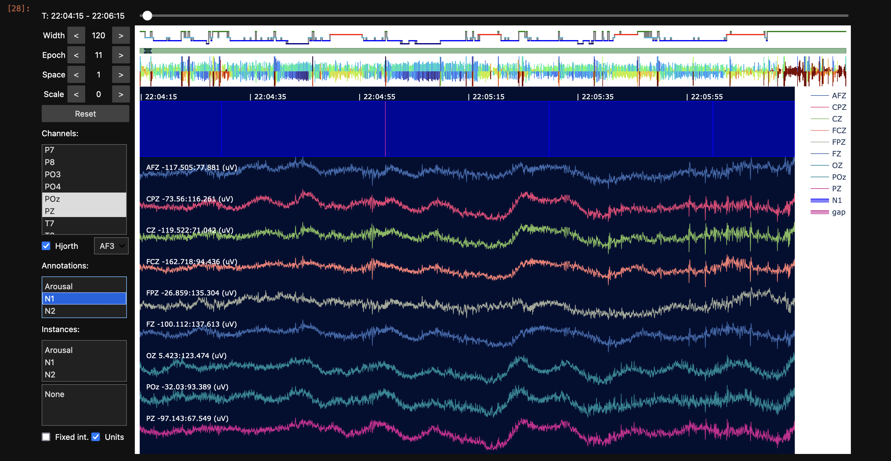
Here is a gap from M10:
and now with zero-padding - again, note how the zero-padding is extended such that we only have whole staged epochs:
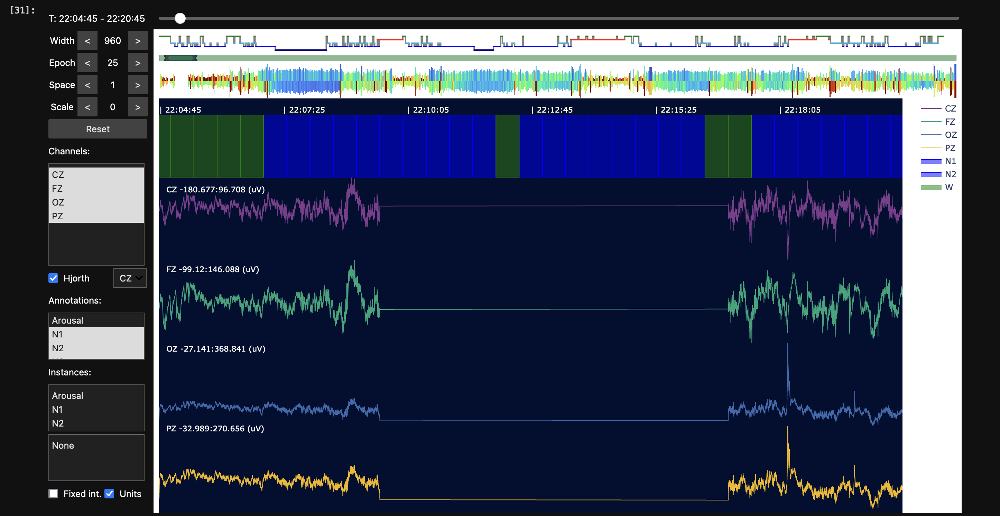
If one MASKed
based on the gap annotation for M10b (which spans the visible
zero-padded area exactly), it would remove the whole zero-padded
insert (and actually, internally, revert to being an EDF+D within
Luna's representation).
Note, when we don't have a sample list, we can directly attach and EDF and annotation file(s) as follows (i.e. first clearing
any internally attached sample list, meaning that proj.inst() will generate an empty instance, whatever the ID used):
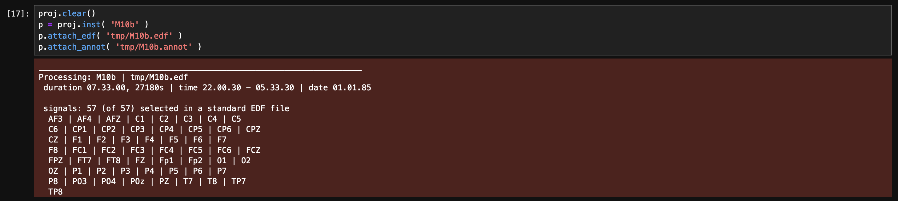
Wrapping up, we've seen how to detect and describe gapped EDFs, how to
visualize those segments/gaps (with lunapi), and how to consider different issues
that may arise if segments, stage annotations, analytic epochs (and/or
EDF record boundaries) misalign in various ways. We've used the EDF-MINUS to "correct"
these issues for F10 and M10 in principled ways -- although in this walkthorugh, we'll actually
revert to the v1 originals for all three gapped recordings, for simplicity.
We'll now go on to detect possible flat/duplicate channels across EDFs.